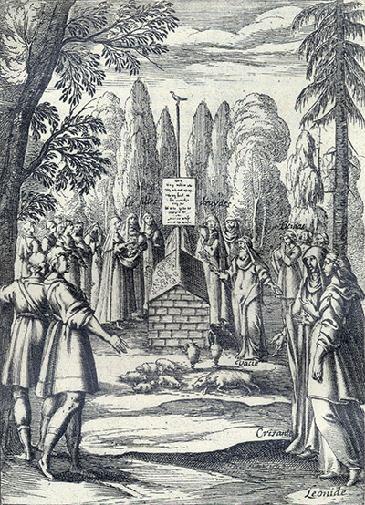
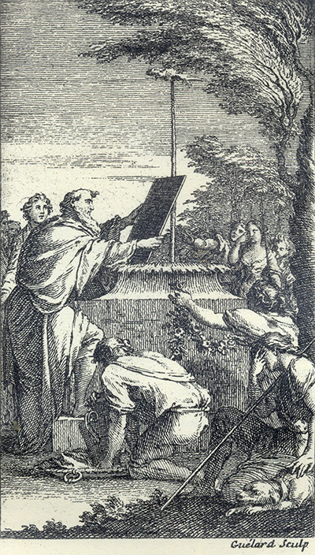

L'Astrée
d'Honoré d'Urfé
Deuxième partie
Livre 8

Au fond, le vain tombeau de Céladon. le vacie et les bêtes sacrifiées
Au premier plan, Léonide et Chrisante
Derrière elles, Lycidas portant l'eau arfériale
À l'arrière, les filles druides (II, 8, 552)
L'AstréeII, 8. Édition Vaganay**, 1925Au fond, le vain tombeau de Céladon. le vacie et les bêtes sacrifiées
Au premier plan, Léonide et Chrisante
Derrière elles, Lycidas portant l'eau arfériale
À l'arrière, les filles druides (II, 8, 552)
(Voir Illustrations)

Gravure signée Guélard
Devant le vain tombeau de Céladon, le vacie accroche l'épitaphe
Au premier plan, Astrée et Mélampe. Au centre, Silvandre à genoux (II, 8, 552)
L'AstréeII, 8. Édition Vaganay**, 1925Gravure signée Guélard
Devant le vain tombeau de Céladon, le vacie accroche l'épitaphe
Au premier plan, Astrée et Mélampe. Au centre, Silvandre à genoux (II, 8, 552)
(Voir Illustrations)
Édition de 1610, p. 489.
Édition de Vaganay, p. 309.
ORACLE.
Ah ! rivière, continua-t-il peu après, qui es témoin que je suis le plus malheureux, comme autrefois tu m'as vu le plus heureux Berger du monde ! Est-il possible que tu n'aies point de regret de n'avoir voulu mettre une pitoyable fin à mes infortunes, lorsque dans tes eaux
raison sente que la raison aussi
le dédaigne. Si ne laisserai-je de vous remercier autant que peut
faire l'ombre vaine de ce que j'ai été (car
véritablement je ne suis plus autre chose) si vous
êtes venue voir combien vous pouvez sur moi, car comme que ce soit, c'est un de mes plus grands désirs
d'être en votre mémoire. Je vous remercie de même
si la pitié vous y amène, car encore qu'elle soit bien
tardive, ce n'est pas être sans consolation que
d'avoir enfin quelque consolation. Et aussi vous
remercierai-je si c'est la fortune, puisque je connais
par là qu'il n'a tenu qu'à elle que je n'aie plus tôt
ressenti les effets de votre douceur. Et cette
dernière considération sera cause que, comme par le
jugement de tous ceux qui vous voient et par la
grandeur de mon affection, vous êtes la plus belle et
plus aimée Bergère de l'univers, de même je me
dirai, puisque ma fortune et ma constance le veulent
ainsi, le plus infortuné comme le plus fidèle de vos
serviteurs.

Livre 7

Livre 9
Référence électronique :
document.write('"'+document.title.substr(0, document.title.indexOf("-")-1)+'". '+"Dernière mise à jour : "+ExtractDate(document.lastModified)+".")Deux visages de L'Astrée.
©2005-2020 E. Henein.
URL :
var today = new Date();
document.write(document.URL +
"<br>Consulté le : " + today.toLocaleDateString("fr-FR") + ".");
var _gaq = _gaq || [];
_gaq.push(['_setAccount', 'UA-19288475-1']);
_gaq.push(['_trackPageview']);
(function() {
var ga = document.createElement('script'); ga.type = 'text/javascript'; ga.async = true;
ga.src = ('https:' == document.location.protocol ? 'https://ssl' : 'http://www') + '.google-analytics.com/ga.js';
var s = document.getElementsByTagName('script')[0]; s.parentNode.insertBefore(ga, s);
})();
Deux visages de L'Astrée.
©2005-2019 Eglal Henein. Creative Commons 4 
Édition critique de la première partie de L'Astrée (1607, 1621)
mise en ligne le 9 avril 2007
Édition critique de la deuxième partie de L'Astrée (1610, 1621)
mise en ligne le 10 octobre 2010
Édition critique de la troisième partie de L'Astrée (1619, 1621)
mise en ligne le 1er novembre 2014
Édition critique de la quatrième partie de L'Astrée (1624)
mise en ligne le 15 janvier 2019
document.write("Dernière mise à jour : "+ExtractDate(document.lastModified))